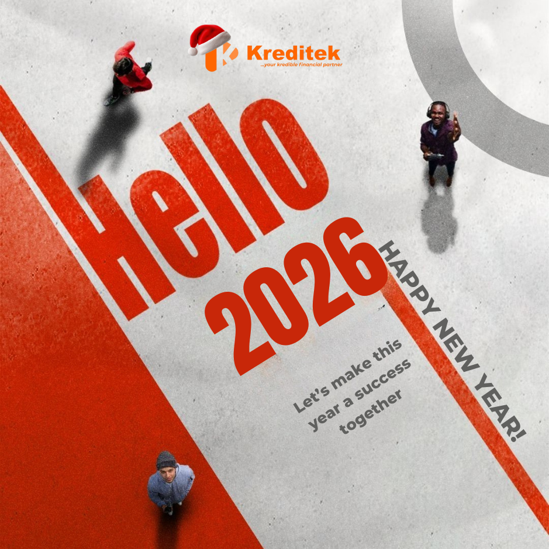
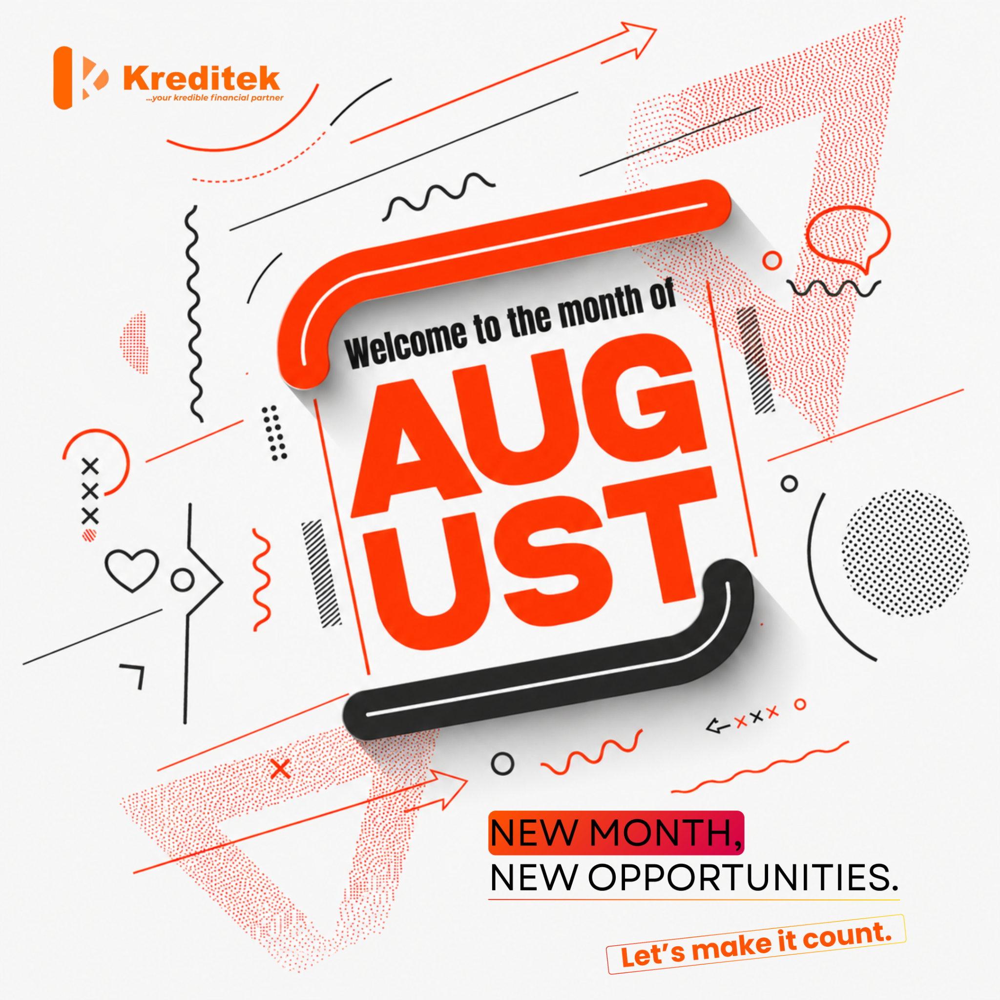

01
Kreditek
Fintech / Instant Loans
Instagram Management · Jul 2025 — Aug 2026
The challenge
Kreditek lends against collateral such as cars. The content therefore had to make a financial product feel trustworthy while keeping the application process easy to understand.
The content approach
- Financial literacy — educational posts that build credibility.
- Product content — clear explanations of the offer and approval process.
- Engagement — lighter posts that keep the account human between sales messages.

